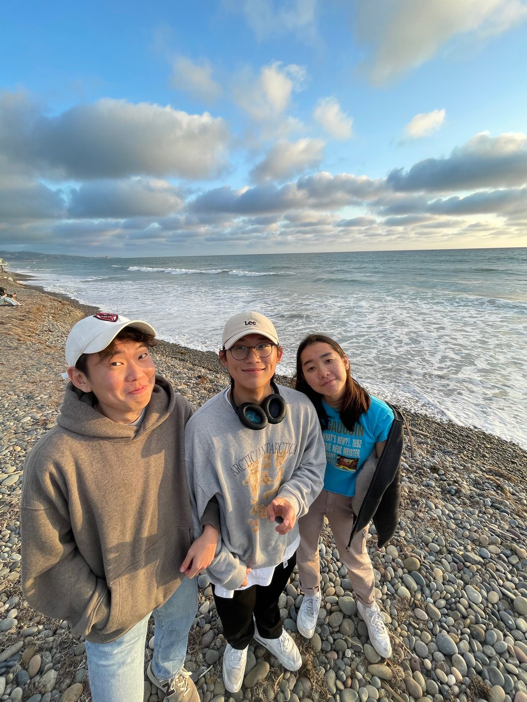
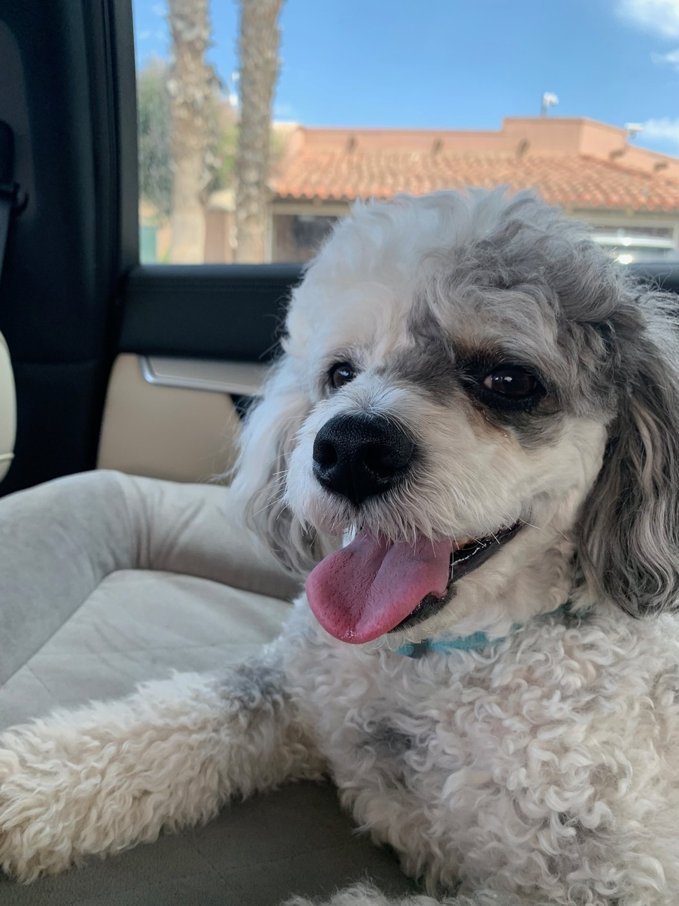
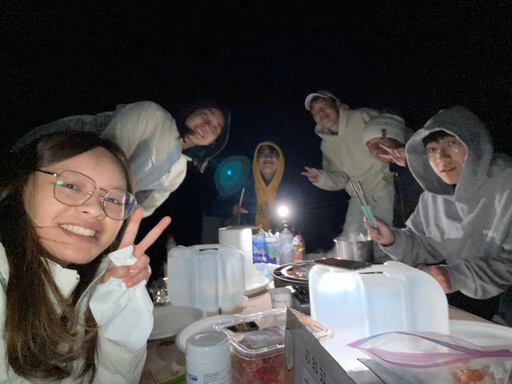
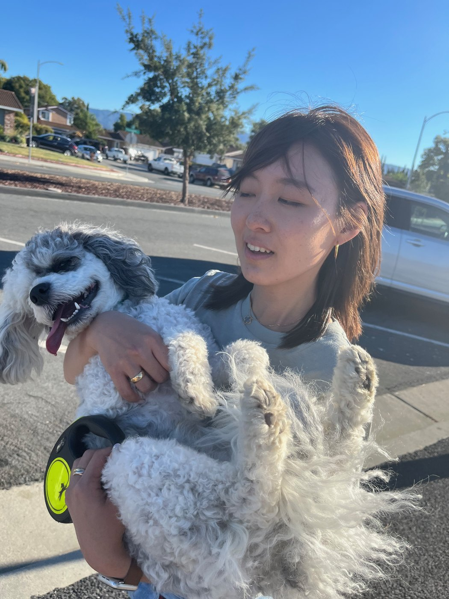
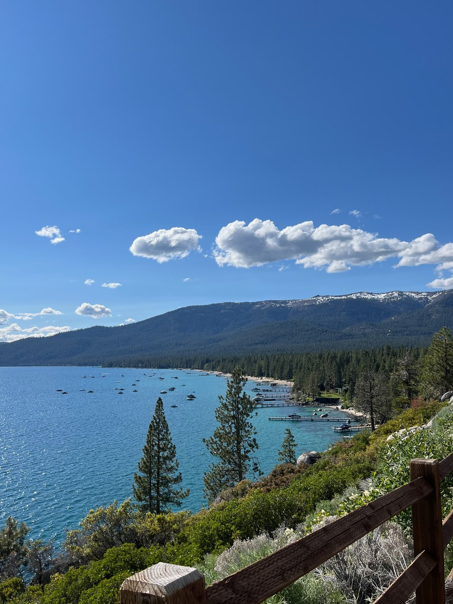
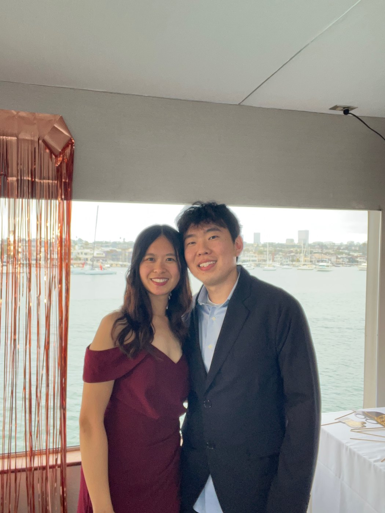
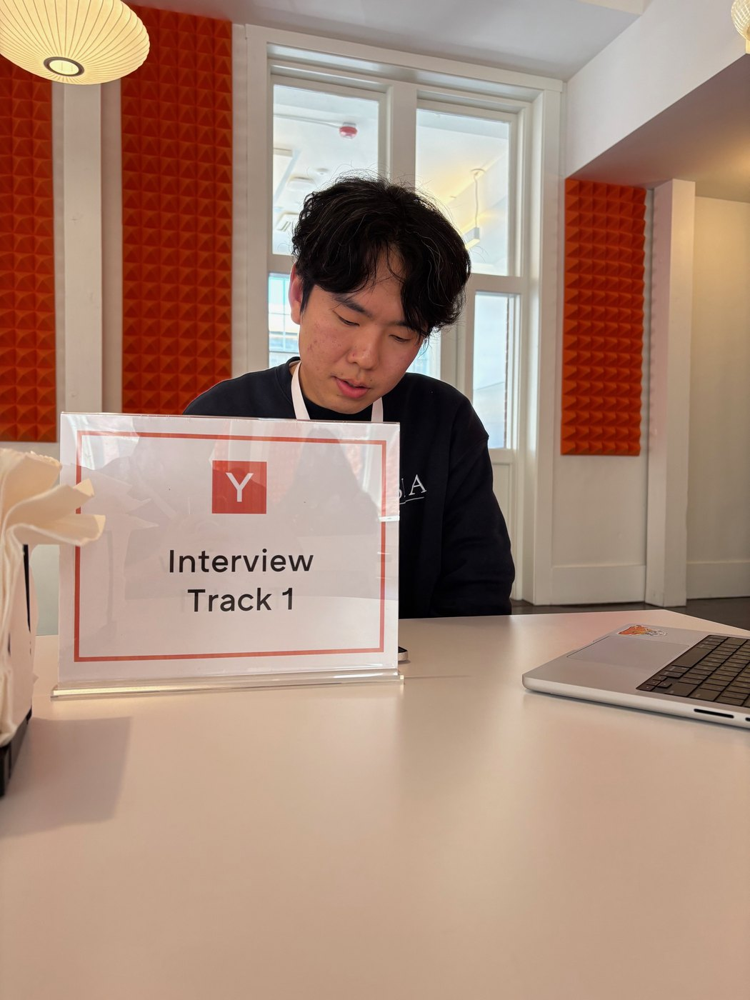
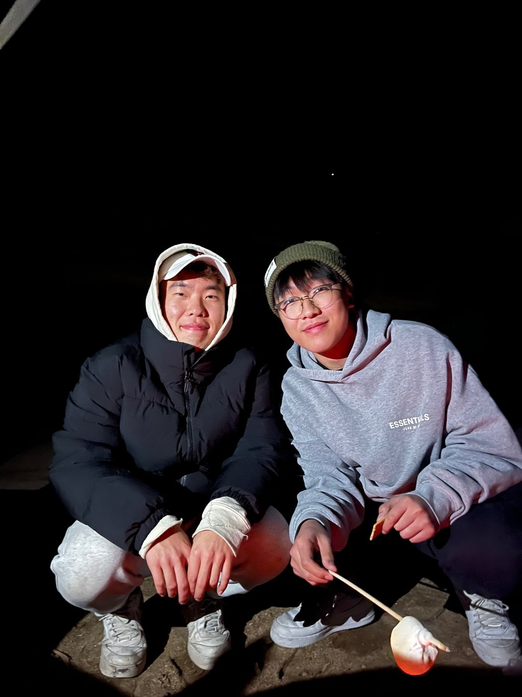
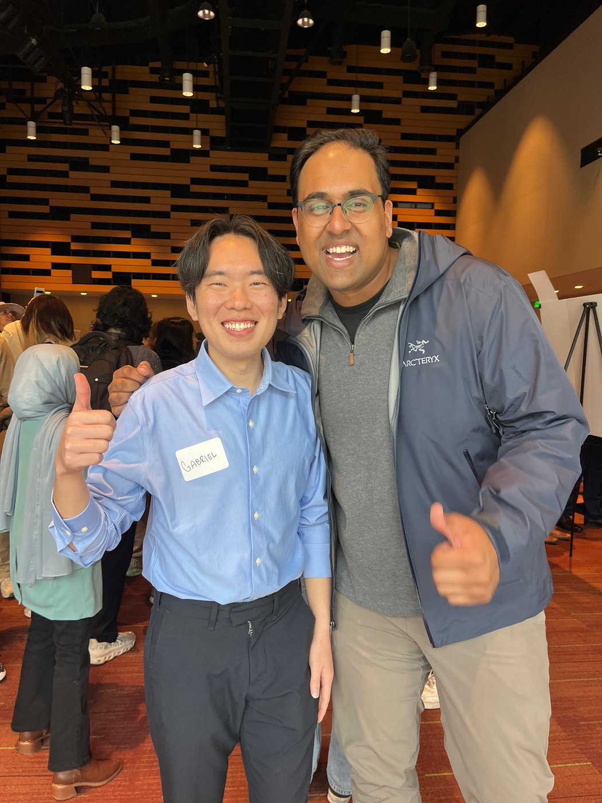

a little about the people, places, and things i love beyond the work.









i grew up in california and went to uc san diego for college. four years there were enough to find the people i'd still be calling years later — the ones who answer at midnight, the ones who'll drive an hour to meet you for coffee. new york has been good to me, but home is still the pacific coast, my parents' poodle losing his mind every time i walk through the door, and tahoe in the spring. i fly back whenever i can.
summer 2025, my team and i made it to a yc interview. we didn't get the funding. we did get a much sharper picture of what we wanted to build, a few new friends, and the kind of closeness you only get from working on one thing for weeks and then watching it not pan out. that turned out to be worth more than the check would have been.
i like showing up — to interviews, hackathons, dinners where i don't know anyone. most of my favorite collaborations started as awkward small talk that somehow turned into something real, so i keep saying hi.
if you want to talk about anything — papers, projects, half-finished ideas, or just to say hi — i'm at gsc2133@columbia.edu. i answer everything.